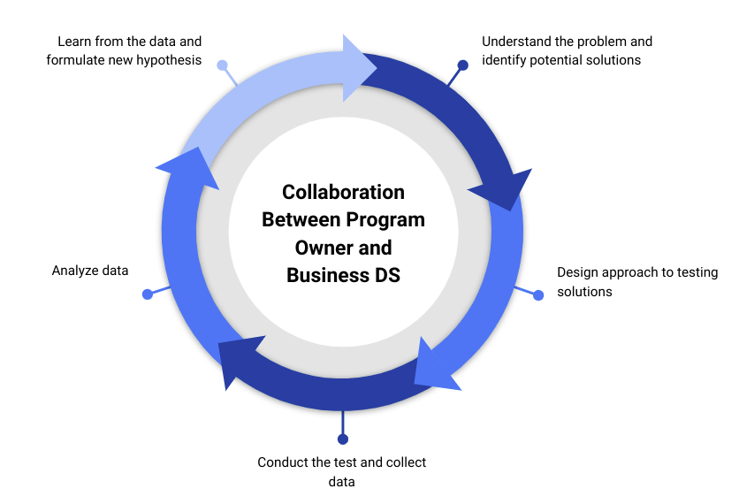

4 Rapid-Cycle Evaluation for Program Improvement
4.1 What is Rapid-Cycle Evaluation?
In today’s fast-paced business environment, the ability to adapt and improve is crucial. Rapid-cycle evaluation (RCE) is a powerful approach that leverages data and state-of-the-art research methods to support continuous improvement. By embedding feedback and data into decision-making processes, RCE allows for real-time adjustments and enhancements to programs and initiatives.
RCE is not just about evaluation; it’s about empowering programs to reach their full potential. This approach, while originating in the public policy sphere, builds on a long history of using data for continuous quality improvement, such as A/B testing, and is readily applicable to the private sector.

RCE is a flexible framework that can be tailored to specific program needs and contexts. It may involve a mix of quantitative and qualitative methods, including:
- Experimental and quasi-experimental designs
- Outcome measurement and large sample surveys
- In-depth qualitative research
The key is to gather information quickly and efficiently, enabling program implementers to make informed decisions without delay.
4.2 Why Use Rapid-Cycle Evaluation?
Early Optimization: RCE can be used in the early stages of a program to test different designs and activities, ensuring the program is on the right track from the outset.
Continuous Improvement: During implementation, RCE helps identify and address bottlenecks or challenges as they arise.
Innovation in Established Programs: Even for established programs, RCE is invaluable for testing new ideas and refining existing strategies.
Preparation for Impact Evaluation: By using RCE for program improvement, we set the stage for measuring impacts of fully designed programs, allowing for more confident investment decisions based on impact evaluation data.
Jumping directly to measuring the impact of a new initiative when it’s just a minimum viable product can lead to premature program cuts. RCE allows for optimization before full-scale impact evaluation.
Bagby and Rangarajan (2023) Using Rapid-Cycle Evaluation to Improve Program Design and Delivery.
4.3 Integrating Behavioral Economics with RCE
Behavioral economics bridges psychology and economics, revealing how people actually make decisions, often deviating from classical economic models of perfect rationality. Integrating behavioral economics insights with RCE can significantly enhance program design and effectiveness.
Key Concepts in Behavioral Economics
Heuristics and Biases: Mental shortcuts that simplify decision-making but can introduce biases. Understanding these can help guide user decisions strategically.
Framing: The way information is presented can significantly impact choices. Positive framing (emphasizing gains) or negative framing (highlighting losses) can be powerful tools depending on the context.
Prospect Theory: People value gains and losses differently, with losses typically having a greater emotional impact (loss aversion). This insight can be applied to marketing strategies and program design.
Nudging: Subtly guiding choices without restricting options, as popularized by Thaler and Sunstein (2009). This involves leveraging behavioral insights to influence decision-making through minor adjustments in “choice architecture.”
Combining RCE with behavioral economics offers a powerful toolkit for optimizing programs, products, and services. By understanding how people actually make decisions, we can design interventions that are more impactful and aligned with real-world behavior.
Thaler and Sunstein (2021) Nudge: The final edition. Yale University Press.
4.4 Conclusion
By embracing RCE and incorporating behavioral economics insights, organizations can move beyond incrementalism and create programs that are not only impactful but also adaptable to changing circumstances. This approach fosters a culture of continuous learning and improvement, ensuring that programs and initiatives are constantly evolving to meet their full potential.